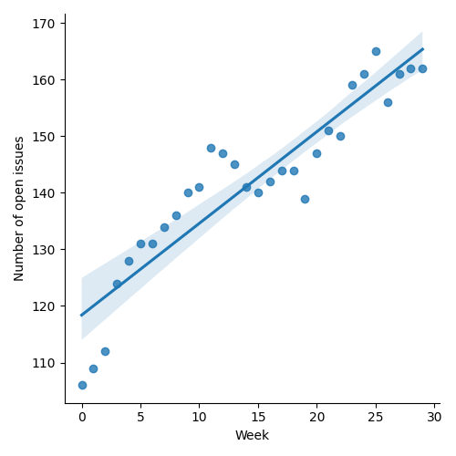
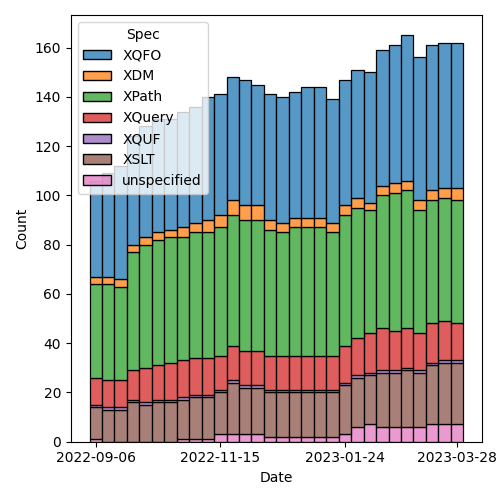

QT4 CG Meeting 029 Minutes 2023-04-04
Table of Contents
- Draft Minutes
- Summary of new and continuing actions
[0/14] - 1. Administrivia
- 2. Technical Agenda
- 2.1. PR #411: Remove the note from the parse-html unparsed-entity sections
- 2.2. Issue #399: Using Multilevel Hierarchy and Abstraction…deep-equal
- 2.3. Issue #280: Why is resolve-uri forbidden … a fragment identifier?
- 2.4. Issue #293: Error in fn:doc-available specification
- 2.5. Issue #315: fn:transform inconsistency: initial-mode
- 2.6. Issue #367: Focus for RHS of thin arrow expressions
- 2.7. Issue #397: Type names
- 3. Adjourned
Draft Minutes
Summary of new and continuing actions [0/14]
[ ]QT4CG-002-10: BTW to coordinate some ideas about improving diversity in the group[ ]QT4CG-016-08: RD to clarify how namespace comparisons are performed.[ ]QT4CG-023-01: NW to review the stylesheets for functions across XPath and XSLT[ ]QT4CG-025-03: MK to revise and expand technical detail in PR #375[ ]QT4CG-026-01: MK to write a summary paper that outlines the decisions we need to make on “value sequences”[ ]QT4CG-027-01: MK to update the text for next-match wrt type() matching[ ]QT4CG-028-01: MK to summarize the options available wrt deep equal and errors[ ]QT4CG-029-01: RD+DN to draft spec prose for the “divide and conquer” approach outlined in issue #399[ ]QT4CG-029-02: NW to check how Java and JavaScript behave when resolving a relative URI against a base URI that has a fragment identifier.[ ]QT4CG-029-03: NW to draft a PR that resolves issue #280[ ]QT4CG-029-04: CG to draft a PR that resolves issue #293[ ]QT4CG-029-05: NW to draft a PR that resolves issue #315[ ]QT4CG-029-06: NW to put a review of the thin arrow operator on the agenda (with links to the relevant issues)[ ]QT4CG-029-07: NW to open the next discussion of #397 with a demo from DN
1. Administrivia
1.1. Roll call [11/13]
[ ]Anthony (Tony) Bufort (AB)[X]Reece Dunn (RD)[X]Sasha Firsov (SF)[X]Christian Grün (CG)[X]Joel Kalvesmaki (JK) [0:10-][X]Michael Kay (MK)[X]John Lumley (JL)[X]Dimitre Novatchev (DN)[X]Ed Porter (EP)[X]C. M. Sperberg-McQueen (MSM)[ ]Bethan Tovey-Walsh (BTW)[X]Norm Tovey-Walsh (NW). Scribe. Chair.[X]Mohamed Zergaoui
SF announces his proposal for templating using XSLT in the webcomments group!
1.2. Accept the agenda
Proposal: Accept the agenda.
Accepted.
1.2.1. Status so far…

Figure 1: “Burn down” chart on open issues

Figure 2: Open issues by specification

Figure 3: “Burn down” chart on open issues
1.3. Approve minutes of the previous meeting
Proposal: Accept the minutes of the previous meeting.
Accepted.
1.4. Next meeting
The next meeting is scheduled for Tuesday, 11 April 2023.
No regrets heard.
1.5. Review of open action items [0/7]
[ ]QT4CG-002-10: BTW to coordinate some ideas about improving diversity in the group[ ]QT4CG-016-08: RD to clarify how namespace comparisons are performed.[ ]QT4CG-023-01: NW to review the stylesheets for functions across XPath and XSLT[ ]QT4CG-025-03: MK to revise and expand technical detail in PR #375[ ]QT4CG-026-01: MK to write a summary paper that outlines the decisions we need to make on “value sequences”[ ]QT4CG-027-01: MK to update the text for next-match wrt type() matching[ ]QT4CG-028-01: MK to summarize the options available wrt deep equal and errors
2. Technical Agenda
In response to feedback from last week, this agenda includes more issues and fewer PRs. MSM and I reviewed the issues list and selected a group of issues that (a) looked like they would benefit from discussion and (b) were not marked Feature or Enhancement. (We obviously need to discuss enhancements and features too, but focusing on bugs and errors seemed like a good initial strategy.)
I propose an initial 15 minute time box on each issue. If, after 10 minutes, if we aren’t closing in on a resolution, let’s work out what we need to do to improve our chances of being able to resolve it next time.
2.1. PR #411: Remove the note from the parse-html unparsed-entity sections
2.2. Issue #399: Using Multilevel Hierarchy and Abstraction…deep-equal
See issue #399
DN outlines his proposal in issue #399. The strategy we should employ is “divide and conquer.”
DN walks through the expanding list in the issue: deep-equal, deep-equal-sequence, etc. There are functions for sequences, atomic values, maps, arrays, nodes, elements, etc.
- DN: As you can see on the screen, this decomposes the problem into smaller, easier to understand pieces.
- JL: Is it my understanding that things that are normalizations happen at the level when you’ve got a set of things, before they then get compared?
- DN: Yes, I think so. And I forgot: maybe implicitly in the current specification, there is such division. But it is not explicitly stated. Some people may not even notice this aspect of the specification.
- JL: I’m still confused. Are there any of these functions where there are normalization checks that have some influence up and down the hierarchy?
- MSM: What do you mean by normalization?
- JL: Well, you might want to ignore whitespace nodes, for example.
- DN: This is the issue that RD raised, we will still need to have some kind of options or configurations that tells us what to do in each case. What I thought we could do in each case is to make a nested map that has the configuration data for each level. We can provide this as a system function. When ever someone needs to provide different options, they can use some sort of put operation only on the level they need.
- RD: Looking at the current definition of deep equals, the rules section has four groups, one dealing with atomics, then maps, then arrays, then nodes. This is essentially the decomposition strategy. So my question is, are you talking about splitting those into separate subsections, or making them specific functions?
- DN: I believe that the quality of our documentation would benefit from splitting larger problems into smaller. Making different sections and referring to them explicilty. I think we could have different functions explicitly, but maybe we don’t need to expose them all at the user level.
- RD: So if this is purely an organization and presentation thing, would it make more sense to have a top-level heading, something like “deep equals” or “comparison” and then have a section for the record definition, one for the function, and then one for each of the four sections we already have. Would organizing that way make sense? We have similar precedents in the casting rules, for example?
- DN: I’m not sure I understand clearly what the difference is between that proposal and what we have here.
- RD: We’d need to make something that was a “table of contents” section similar to the way that we do the casting rules. Then we can move rules into their own subsections. And move the record type definition out.
- SF: DN says we need to use feature flags for different deep-equal subfeatures. I’d like to elevete this to something that’s available at the system level on every subtree.
- NW: There’s the question of the “configuration map” that I think isn’t spelled out clearly enough for me.
- MK: I’d like to see someone experiment with different ways of presenting it. The one thing I don’t want to be here is defensive.
- RD: I could go have a go at it.
ACTION QT4CG-029-01: RD+DN to draft spec prose for the “divide and conquer” approach outlined in issue #399
- DN: I’d like to make sure that the minutes record the idea of having a map to be used for configuration options. In any case we can have preference provided as a system function.
- NW: I’ve done my best, but that configuration map is one of the things I’m confused bout.
2.3. Issue #280: Why is resolve-uri forbidden … a fragment identifier?
See issue 280.
- NW outlines the issue.
General agreement.
- MSM: Can we make it clear that strictly speaking, in at least one reading of the RFC, this is a little more relaxed.
- RD: Is this a change in behavior with how Java and JavaScript work?
ACTION QT4CG-029-02: NW to check how Java and JavaScript behave when resolving a relative URI against a base URI that has a fragment identifier. ACTION QT4CG-029-03: NW to draft a PR that resolves issue #280
2.4. Issue #293: Error in fn:doc-available specification
See issue 293.
- CG: There’s a difference here between what the normative prose says and what the note says. MK outlines the solution in a comment.
- MK: I have a vague memory of this issue. It looks like the main prose was updated but the error code wasn’t.
- JL: The same thing happens for unparsed-text-available()
ACTION QT4CG-029-04: CG to draft a PR that resolves issue #293
2.5. Issue #315: fn:transform inconsistency: initial-mode
See issue 315.
MK explains the issue.
- MK: This is technically a breaking change, but it
- DN: What is the difference between the unnamed mode and the default mode?
- MK: You can declare that a mode other than the unnamed mode is the default.
ACTION QT4CG-029-05: NW to draft a PR that resolves issue #315
2.6. Issue #367: Focus for RHS of thin arrow expressions
See issue 367.
MK explains the issue.
- MK: I think describing the
->in terms of the!operator was done without considering the fact that doing so changes the context for the other arguments.- … This makes
->and=>different in a subtle way. - … This proposal is to define
->in terms of aforexpression.
- … This makes
- DN: I’m not ready to vote either way because I don’t think I’ve seen this before.
- MK: Can I suggest an action then to put on the agenda a review of the thin arrow operator?
- RD: There are also a couple of issues that folks have raised around those. It would be good to include those as well.
ACTION QT4CG-029-06: NW to put a review of the thin arrow operator on the agenda (with links to the relevant issues)
2.7. Issue #397: Type names
See issue 397.
- MK: This went into the initial draft I produced, but there are some
inconsistency in the presentation there and it generally needs
review.
- … Background here is that I started writing stylesheets using record types and that turned out to be pretty unweildy. Having to repeat the record type definition everywhere is too cumbersome. (h/t to John Snelson for the original idea.)
- … The proposal here is that you can declare a name that maps to an item type and then in place of the item type you can use that type name.
- … MK walks through some of the details of the proposal.
- MK: I think I’ve been persuaded that they should be in the same symbol space works better. When you declare an item type, it’s not allowed to conflict with an item type that you’ve imported from a schema. You could do that at the namespace level or the individual name level. I’d go for at the level of the individual name.
- DN: I think this is a very good idea.
- … DN discusses his objection raised in his first comment on the issue
- … Why isn’t this in XPath? It means that the user has to redundantly make the definition in both XQuery and XSLT. It would be much better to have it in XPath. I’m convinced that this is inferior to have the decision to have it in XPath.
- MK: I think the problem with doing it at the XPath level is knowing how to do it. In many cases, languages that use XPath have different expressions in many different places and no one expression can change the static context for any other expression. If you’re calling XPath from JavaScript, how can you do this?
- DN: I can answer that, you can have a function library that’s written purely in XPath that declares the types and you can import them.
- RD: The type names operate in the prologue that defines the static
context. If you disallow it in the context, then you’d be
disallowing global variables and all sorts of other things. It makes
sense for this to be part of the prologue so that it applies to the
entire XQuery module that you can then import into other modules.
- … The reason it has an XQuery and XSLT declaration is the same way that you have xsl:variable and xsl:function in XSLT and declare variable and declare function in XQuery: you’re defining parts of the global context.
- DN: I never said that having type names defined in the prologue should be forbidden, I think that you could define them there and it doesn’t forbid having them in XPath.
- MK: How is this useful though, the scope of XPath is an expression.
- DN: But you can import libraries into XPath.
- RD: If I understand what you’re proposing, it’s that we have and keep the global item types, but we also have a local version kind of like let expressions that can appear in XPath.
- DN: I care very little about the global level of XQuery and XSLT, but I care a lot about XPath. I’ve pointed out the redundancy problem that follows from this.
- RD: I think we can have all three: a global XSLT syntax, a global XQuery one like define variable, and an expression-scope specific syntax like the let expression.
- DN: Yes, and it’s not unfamiliar. The map data type was first defined in XPath and then later that got added to XSLT, for example. It would be extermely inconvenient, unusual, and unjustified to only be able to define maps in XQuery and XSLT but not XPath and this problem is exactly the same.
- MK: But the use case for this is about reusing types that are in your function library.
- DN: Yes, and there are global function libraries that can be imported.
- MK: Not in our specifications, we don’t. There’s no import mechanism in XPath. People can implement it, but it’s not part of our language!
- DN: But that doesn’t mean that people don’t do this!
- MK: But if you can extend beyond our specifications to a global function library, then you can extend it to a global type library as well.
- RD: As a way forward here, if we just consider the global scope in this proposal, we can have a separate proposal for a local scope proposal.
- DN: I don’t think there is a need for a special proposal, it’s just this proposal but remove the references to XSLT and XQuery.
- RD outlines some ideas about how it might be possible to build on this proposal in the future to have local scopes.
- RD: Not everyone uses the approach of allowing a global function library in XPath.
- DN: Not everyone uses xsl:map, some people just use XPath!
- RD: The analagous things here are functions and variables. It makes sense to have both mechanisms and let the user choose.
We’ve reached the end of the hour without resolving this issue.
- NW: What next?
- MK: If DN has a concept of loading global libraries into XPath, we need to understand that better.
ACTION QT4CG-029-07: NW to open the next discussion of #397 with a demo from DN
3. Adjourned
None heard.